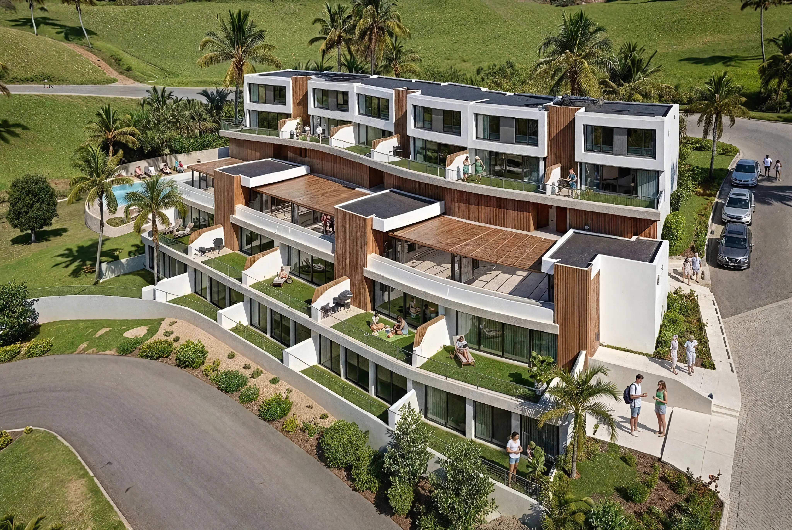
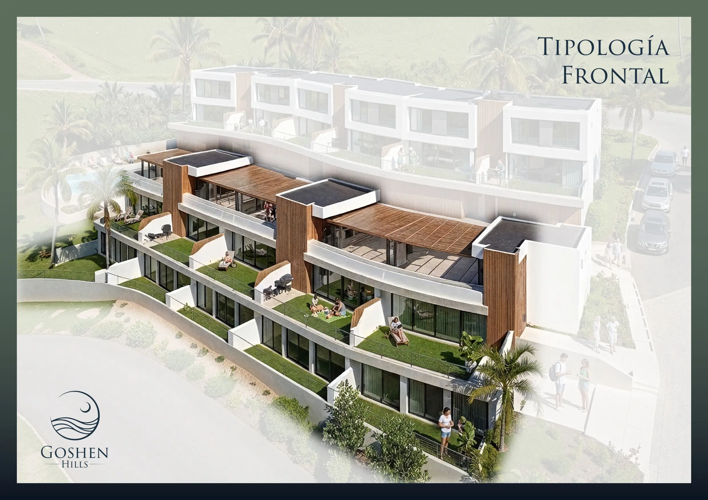
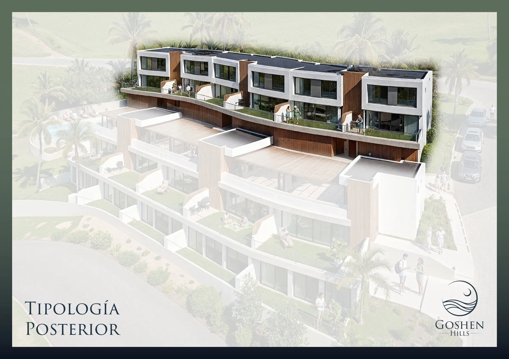

Goshen Hills
Donde el cielo abraza el mar
SANTA MARTA · COLOMBIAEl mercado inmobiliario más dinámico del Caribe colombiano — en el radar de Forbes entre los cinco mejores destinos del mundo frente al mar.
Once villas. Once formas de habitar el Caribe.
En cada villa, la luz, la brisa y el horizonte convergen para crear una identidad arquitectónica única y excepcional.
Toque cada villa para abrir su mundo.


Tipología Posterior
Ascienden por la ladera hacia la luz y el cielo. Terrazas orientadas al horizonte.

Tipología Frontal
Descienden hacia el mar y los patios privados más amplios de la colección.
Interiorismo al servicio del horizonte.
Las villas de Goshen Hills operan como lienzos en blanco. La arquitectura desaparece para que la luz natural, la brisa cruzada y el sonido del mar asuman el protagonismo — ventanales de piso a techo que diluyen la frontera entre el interior y el vasto mar Caribe.
Explora la zona.
Vía al Rodadero · Reserva de la Montaña, Santa Marta, Magdalena
Ver en Google Maps ↗Goshen Hills no fue concebido para competir con el mercado.
Fue concebido para distinguirse de él.
El Caribe colombiano se ha llenado de torres que crecen en altura, condominios que crecen en número, ofertas que crecen en urgencia. Goshen Hills nace de una decisión opuesta: once villas privadas dispuestas con respeto al terreno, no contra él.
En la Reserva de la Montaña, sobre Vía al Rodadero, la arquitectura no impone. Revela luz, brisa y paisaje. Cada villa fue diseñada para preservar lo que el lugar ya ofrece: el horizonte abierto del mar Caribe y la presencia silenciosa de la Sierra Nevada de Santa Marta.
Aquí no se vende un metro cuadrado más. Se conserva un horizonte que no se repite.
"El lujo que no se exhibe, se respira."
Santa Marta, la zona y Goshen Hills.
¿Por qué Santa Marta es el nuevo destino de lujo del Caribe colombiano?
Santa Marta es la ciudad más antigua de Colombia y hoy el destino de mayor crecimiento del Caribe: Forbes reportó un alza del 22,7% en visitantes internacionales. Combina mar Caribe, la Sierra Nevada y el Parque Tayrona en un mismo entorno, lo que la convierte en el destino de mayor proyección del Caribe colombiano.
¿Conviene adquirir una propiedad en Santa Marta hoy?
Quienes reconocen una ciudad antes de su consolidación toman una posición privilegiada. Santa Marta vive un momento de descubrimiento global, con creciente demanda nacional e internacional y una oferta de villas privadas todavía limitada.
¿Dónde comprar una villa de lujo en Santa Marta?
Vía al Rodadero, en la Reserva de la Montaña, es una de las zonas más valoradas: ladera elevada con vista al Caribe, a diez minutos del Rodadero y veinte del aeropuerto. Goshen Hills es una colección privada de once villas en este sector.
¿Qué hace especial a la zona de Vía al Rodadero?
Es una ladera sobre el mar en el flanco de la Sierra Nevada: brisa de montaña y horizonte caribeño a la vez, fuera del ruido urbano pero a minutos de los servicios del Rodadero y del Aeropuerto Internacional Simón Bolívar.
¿Qué tan cerca está Goshen Hills del aeropuerto y del Parque Tayrona?
A 10 minutos del Rodadero, 20 del Aeropuerto Internacional Simón Bolívar y 40 del Parque Nacional Natural Tayrona.
¿Cómo son las villas de Goshen Hills?
Once villas privadas de tres alcobas en suite, entre 211 y 290 m², con piscina, terraza o patio privado, cocina abierta y vista al mar Caribe. Seis villas posteriores ascienden por la ladera y cinco frontales descienden hacia los patios más amplios de la colección.
¿Cómo solicitar información o conocer la disponibilidad de Goshen Hills?
La información se gestiona en una conversación privada por WhatsApp (+57 300 400 0707) o por correo a hola@goshenhills.com.co. Se entrega la disponibilidad real del momento y la villa que mejor corresponde a cada perfil familiar.